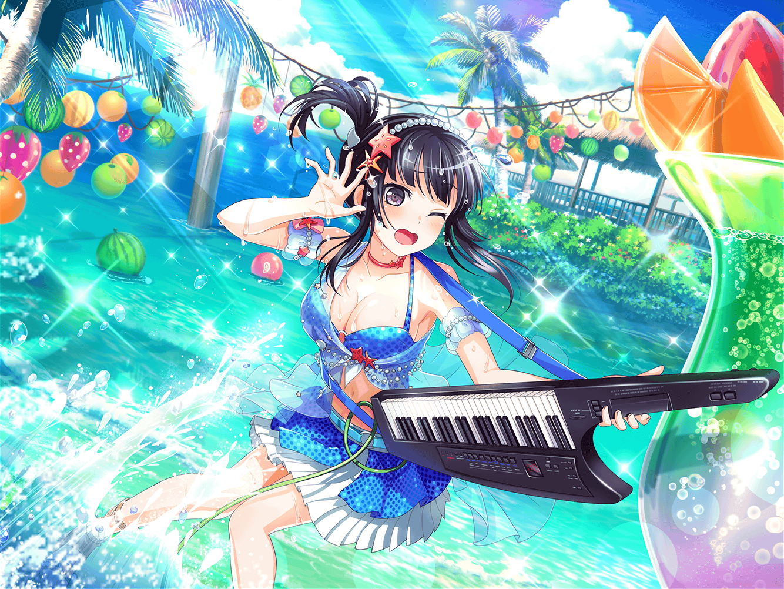

CiRCLE ロビー
燐子
……カウンターにあった……この雑誌……
海特集、って書いてある……今度……みんなで海……行くし……
なにか、参考に……なるかな……
燐子
あ……いろんな、水着が……のってる……
すごい……これ……この間、今井さんが……
おすすめしてくれたのと……似てる……
燐子
あ……このページの……
持ちもの、チェックリスト……便利……かも
燐子
えと……水着は買った、から……
この項目は……大丈夫……
あとは……帽子と……日焼け止めと……
燐子
タオル、と……サングラス……
サングラス、買うのは……ちょっと、はずかしいな……
燐子
あとは……えっと……
燐子
…………あ。
{{userName}}さん……？
び、びっくり……しました……
燐子
あ、いえ……その……練習は……
さっき、終わり……ました……
燐子
はい……わたし……ちょっと、
見ておきたい……ものあって……
燐子
この……カウンターにおいてあった……
ファッション雑誌……です……
燐子
海特集、って……書いて、あったので……
燐子
……そうです……その、実は……
いろいろ、あって……今度……
海に……行くことに……なって……
燐子
海、なんて……行ったこと……ないので……
どんな……感じなのかなって……思いまして……
燐子
あ、えと……その……
ひとりで……行くわけじゃ、ないので……
あこちゃんも、今井さんも……います……
燐子
……はい……水着、買いました
この間……今井さんと……上原さんと……
お店……行ったんです……
燐子
そうです……
上原さんも……一緒に……海、行きます……
燐子
あの……わたし……学校のプール、以外で……
水着を……着るの……はじめて、で……
燐子
だから……おふたりとも……
いろいろ、選んで……くれて……
燐子
たくさん……アドバイス……もらいました……
水着、いろんな種類……あるんですね……
燐子
は、はい……おふたりとも……
水着にも……くわしくて……
燐子
わたしに……似合いそうな、もの……
たくさん、見せて……くれました……
燐子
あ……でも……
今井さんは……黒がいい、とか……
上原さんは、ピンクが似合う……とか……
燐子
おふたりの……意見……
ときどき……分かれちゃって……
燐子
色、だけじゃなくて……
その……ビキニ型、とか……
ワンピース型、とか……
燐子
たくさん……言ってもらったのに……わたし……
ちょっと……混乱したり、しました……
燐子
でも……おふたりが……
わたしのために……考えてくれて……
燐子
そういう……おふたりの、気持ち……
……とっても、うれしかったです……
燐子
……はい……見つけられ、ました
燐子
今井さんと……上原さんの……意見……
どっちも、取り入れた水着を……探したんです……
燐子
今井さんが……言ってくれた……黒色と……
上原さんが、言ってくれた……ワンピース型……
燐子
かわいくて……かっこいい、って……
おふたりとも……ほめてくれました……
燐子
……はい……その……
わたしも……気に入って、ます……
燐子
海は、楽しみです……
でも……緊張も、してます……
燐子
一緒に行く……上原さん……
これまで……あまり……
お話、したこと……なくて……
燐子
わたし……買いものの時も……
そんなに、たくさん……話せなかったですし……
燐子
ちゃんと……お話、できるでしょうか……
燐子
あと……海……自体も……
はじめて、なので……こわくて……
燐子
{{userName}}さんも……
はじめての、場所……こわい、ですか……？
燐子
なんか……ちょっと、ほっと……しました……
はい……せっかく行くんだから……
勇気……出して……行ってきます……
燐子
アドバイス……ありがとう……ございます……
燐子
あ……そういえば{{userName}}さん……
聞いても……いいですか……？
燐子
海って……日差し、すごいって聞きますし……
やっぱり、テントは……あった方が、いいですよね……？
燐子
……え、え……？
な、なんで……笑ってるんですか……？
燐子
ち、ちがうんですか……？
わ……笑ってないで……教えて、ください……
{{userName}}さん……